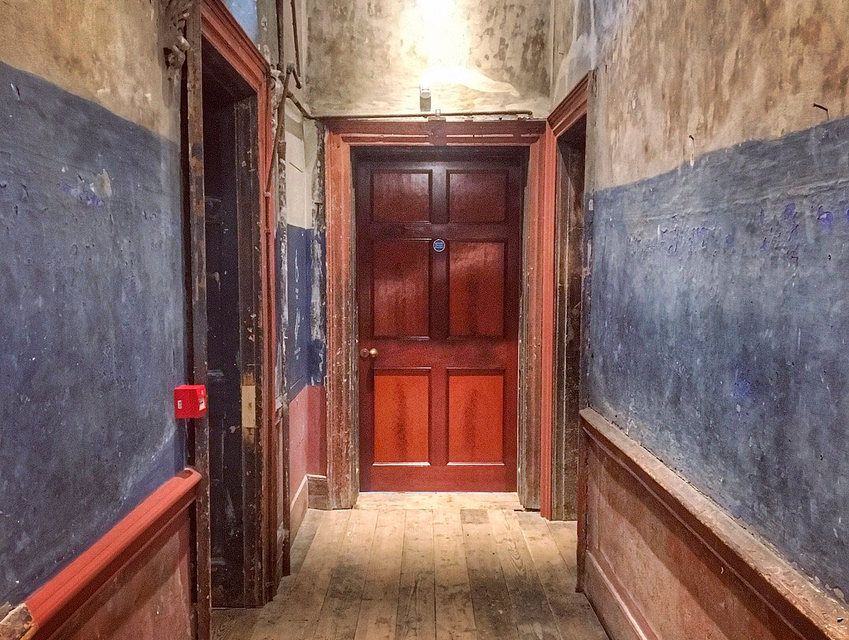

Juno and the Paycock — An Interactive Experience
Dublin, 1922. You live in a tenement on Hilljoy Square. The Boyle family is on your landing. You've got a problem. Log in to create your character and knock on their door.
Who are you in the tenement? Give yourself a name, a story, and a problem to bring to the Boyles.

You stand outside the Boyle family flat on the landing.
You take a breath and raise your hand.
Juno and the Paycock was first performed at the Abbey Theatre, Dublin, 1924.
This experience was brought to you by Irish Network New Orleans.